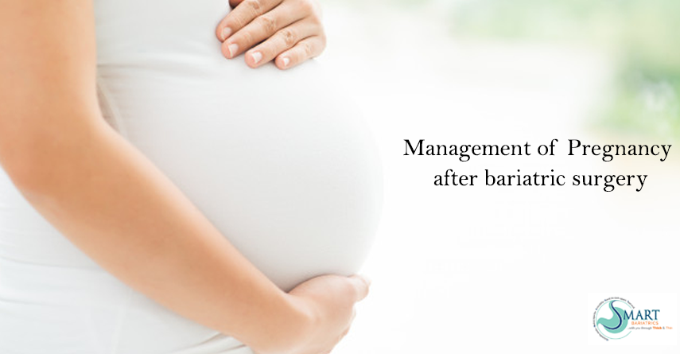

Bariatric Surgery February 24, 2021 Dr. Atul Peters

Navigating Pregnancy After Bariatric Surgery: What You Need to Know
Obese women in reproductive age, looking forward to bariatric surgery as a weight loss option, are usually dubious about chances of conception and pregnancy after bariatric surgery.
Hormonal Imbalances and Infertility
Women with a high BMI, have a lower likelihood to become pregnant as compared to lean women, mainly due to irregularity in menstrual cycles or anovulation associated with obesity.
About 50% of obese women with infertility or PCOD are dissatisfied with their sexual life. This might be caused by increased circulatory androgens (testosterone and DHEA-S), raised due to decreased hepatic production of sex hormones-binding globulin (SHBG). Hyperinsulinaemia also triggers lieutinizing hormone-mediated androgen production in ovarian theca cells, these hormonal imbalance cause infertility.
Benefits of Bariatric Surgery for Fertility
Bariatric surgery also called as weight loss surgery improves chances of conception, pregnancy and delivery. Weight loss surgery cures PCOD (Poly Cystic Ovarian Disease), improves hormonal balance and fertility. After bariatric surgery there is a steep rise in SHBG and a drop in testosterone, androstenedione and DHEA-S levels in women which thereby improves menstrual irregularities and infertility.
Contraceptive Considerations Post-Surgery
As the fertility improves after bariatric surgery, all women in reproductive age should take additional contraceptive measures. Oral pills may not provide sufficient protection after bariatric surgery especially after gastric bypass due to malabsorption.
Planning Pregnancy After Bariatric Surgery
Pregnancy should be planned after 12 to 18 months post-bariatric surgery and requires regular and more frequent follow-up visits to the doctor. Delivery should be planned in a tertiary care center with experienced interdisciplinary teams and the availability of a neonatal intensive care unit.
Micronutrient Supplementation During Pregnancy
After bariatric surgery, micronutrient supplementation is advised to all the pregnant women. Supplementation of Iron, calcium, zinc, vitamin D, folic acid, vitamin B12 and vitamin A are important to prevent maternal and fetal complications.
Postpartum Care and Lactation
During lactation, regular follow-up at every 3 months is recommended for new moms after bariatric surgery. Regular examination of the new born is highly recommended.
Monitoring Nutritional Intake for Breastfeeding Mothers
Mothers who have got bariatric surgery done should also exclusively breast fed the baby for 6 months after birth and should be monitored for nutritional intake and deficiencies. Mothers should take advised micronutrient supplementation regularly, as maternal intake of nutrients has strong influence on the quality of the breast milk delivered to the offspring. Malnutrition of the mother can potentially cause undernourishment of the breastfed baby, especially vitamin B deficiency can cause megaloblastic anaemia and development delay in the offspring. Calcium deficiency may lead to reduced calcium secretion in the breast milk and might cause insufficient mineralization of the bones of baby.
Safety and Benefits of Pregnancy After Bariatric Surgery
Pregnancy after bariatric surgery is safe, if properly planned and monitored. Several research studies have reported decreased risk of maternal complications in post bariatric surgery pregnancies, and improved neonatal outcomes, compared with obese women. Also in pregnancy after bariatric surgery, lower risk of gestational diabetes, high blood pressure, miscarriages and preterm birth are detected as compared to obese women.
Have more doubts regarding post-surgery pregnancy? Schedule an appointment with Smart Cliniqs and consult with the top bariatric surgeon in Delhi.
Back to Blog